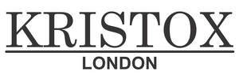

Trade Mark Journal No.2025/046 14 November 2025
UK00004290268 6 November 2025 (3)

- Class 3
- Hair care serums; Hair care serum; Hair care creams; Hair care masks; Hair care preparations; Hair care agents; Hair care lotions [for cosmetic use]; Hair care creams [for cosmetic use]; Cosmetic hair care preparations; Oil baths for hair care; Beard care preparations; Body care cosmetics; Hair care preparations, not for medical purposes; Skin care preparations; Skin care oils [cosmetic]; Hair cosmetics; Hair shampoos; Hair shampoo; Skin care lotions [cosmetic]; Essences for skin care; Facial care preparations; Hair styling lotions; Skin, eye and nail care preparations; Hair moisturizers; Skin care oils [non-medicated]; Hair strengthening treatment lotions; Hand masks for skin care; Shampoos for human hair; Beauty care cosmetics; Beauty creams for body care; Hair lotions; Baby hair conditioner; Cosmetic creams for skin care; Skin care creams [cosmetic]; Hair serums; Skin care (Cosmetic preparations for -); Cosmetic preparations for skin care; Hair lotion; Hair conditioner; Lotions for face and body care; Hair emollients; Soaps for body care; Hair protection lotions; Conditioners for treating the hair; Cleansing milks for skin care; Hair moisturisers; Wax treatments for the hair; Perfumed oils for skin care; Cosmetic preparations for the hair and scalp; Foot masks for skin care; Body cleaning and beauty care preparations; Milky lotions for skin care; Hair treatment preparations; Hair relaxers; Hair balm; Hair nourishers; Hair styling gel; Hair grooming preparations; Sun care lotions; Beauty care preparations; Beauty preparations for the hair; Hair dye; Non-medicated skin care preparations; Hair conditioners for babies; Hair conditioners; Hair bleach; Hair permanent treatments; Non-medicated hair shampoos; Nail care preparations; Hair rinses [for cosmetic use]; Hair creams; Deodorants for body care; Hair care lotions; Skin care mousse; Skin care cosmetics; Skin care creams, other than for medical use; Exfoliants for the care of the skin.
MNAKO LTD
Representative: MAHMOOD UL RASHEED